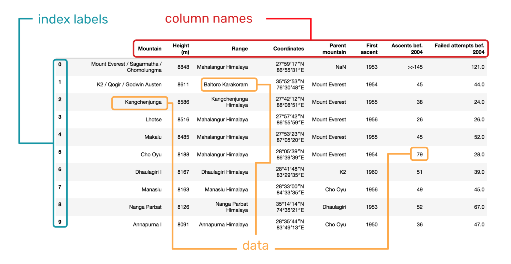

Pandas¶

{kind=link}
Pandas es un paquete de Python que proporciona estructuras de datos rápidas, flexibles y expresivas diseñadas para que trabajar con datos “relacionales” o “etiquetados” sea fácil e intuitivo.
Su objetivo es ser el bloque de construcción fundamental de alto nivel para hacer análisis de datos prácticos del mundo real en Python. Además, tiene el objetivo más amplio de convertirse en la herramienta de análisis/manipulación de datos de código abierto más potente y flexible disponible en cualquier idioma. Ya está en camino hacia este objetivo.
Series y DataFrames
Las series son arreglos unidimensionales con etiquetas. Se puede pensar como una generalización de los diccionarios de Python.
Los dataframe son arreglos bidimensionales y una extensión natural de las series. Se puede pensar como la generalización de un numpy.array.
Pandas Series¶
Trabajando con pandas.Series¶
# importar libreria: pandas, os
import pandas as pd
import numpy as np
import os
# crear serie
my_serie = pd.Series(
range(3, 33, 3),
index=list('abcdefghij')
)
# imprimir serie
print("serie:")
print( my_serie )
serie:
a 3
b 6
c 9
d 12
e 15
f 18
g 21
h 24
i 27
j 30
dtype: int64
# tipo
print("type:")
print( type(my_serie) )
type:
<class 'pandas.core.series.Series'>
# valores
print("values:")
print(my_serie.values)
values:
[ 3 6 9 12 15 18 21 24 27 30]
# indice
print("index:")
print(my_serie.index)
index:
Index(['a', 'b', 'c', 'd', 'e', 'f', 'g', 'h', 'i', 'j'], dtype='object')
# acceder al valor de la serie: directo
print("direct:")
print(my_serie['b'])
direct:
6
# acceder al valor de la serie: loc
print("loc:")
print(my_serie.loc['b'])
loc:
6
# acceder al valor de la serie: iloc
print("iloc:")
print(my_serie.iloc[1])
iloc:
6
# editar valores
print("edit:")
print("\nold 'd':",my_serie.loc['d'] )
my_serie.loc['d'] = 1000
print("new 'd':",my_serie.loc['d'] )
edit:
old 'd': 12
new 'd': 1000
# ordenar valores
print("order:")
my_serie.sort_values(ascending = True)
order:
a 3
b 6
c 9
e 15
f 18
g 21
h 24
i 27
j 30
d 1000
dtype: int64
Operaciones matemáticas¶
Al igual que numpy, las series de pandas pueden realizar operaciones matemáticas similares (mientrás los arreglos a operar sean del tipo numérico). Por otro lado existen otras funciones de utilidad.
Básicas
s1 = pd.Series([1,2,3,4,5])
s2 = pd.Series([1,1,2,2,2])
# suma
print(f"suma: \n{s1+s2}\n")
# multiplicacion
print(f"multiplicacion: \n{s1*s2}")
suma:
0 2
1 3
2 5
3 6
4 7
dtype: int64
multiplicacion:
0 1
1 2
2 6
3 8
4 10
dtype: int64
Estadísticas
# crear serie
s1 = pd.Series([1,1,1,2,2,2,3,3,3,4,5,5,5,5])
print(f"max: {s1.max()}") # maximo
print(f"min: {s1.min()}") # minimo
print(f"mean: {s1.mean()}") # promedio
print(f"median: {s1.median()}") # mediana
max: 5
min: 1
mean: 3.0
median: 3.0
# funcion describe
s1.describe()
count 14.000000
mean 3.000000
std 1.568929
min 1.000000
25% 2.000000
50% 3.000000
75% 4.750000
max 5.000000
dtype: float64
Conteos
# funcion count_values
s2 = pd.Series(["a","a","b","c","c","c","c","d",])
print(f"Conteo:\n{s2.value_counts()}")
Conteo:
c 4
a 2
d 1
b 1
dtype: int64
Masking¶
Existen módulos para acceder a valores que queremos que cumplan una determinada regla. Por ejemplo, acceder al valor máximo de una serie. En este caso a esta regla la denominaremos mask.
# 1. definir valor maximo
n_max = s1.max()
# 2.- definir "mask" que busca el valor objetivo
mask = (s1 == n_max)
# 3.- aplicar mask sobre la serie
s1[mask]
10 5
11 5
12 5
13 5
dtype: int64
Valores Nulos o datos perdidos¶
En algunas ocaciones, los arreglos no tienen información en una determinada posición, lo cual puede ser perjudicial si no se tiene control sobre estos valores.
Encontrar valores nulos
# crear serie
s_null = pd.Series([1,2,np.nan,4,5,6,7,np.nan,9])
s_null
0 1.0
1 2.0
2 NaN
3 4.0
4 5.0
5 6.0
6 7.0
7 NaN
8 9.0
dtype: float64
# mask valores nulos
print("is null?:\n")
print(s_null.isnull() )
is null?:
0 False
1 False
2 True
3 False
4 False
5 False
6 False
7 True
8 False
dtype: bool
# filtrar valores nulos
print("null serie: \n")
print(s_null[s_null.isnull()] )
null serie:
2 NaN
7 NaN
dtype: float64
Encontrar valores no nulos
# imprimir serie
print("serie:")
print( s_null )
serie:
0 1.0
1 2.0
2 NaN
3 4.0
4 5.0
5 6.0
6 7.0
7 NaN
8 9.0
dtype: float64
# mask valores no nulos
print("\nis not null?:")
print(s_null.notnull() )
is not null?:
0 True
1 True
2 False
3 True
4 True
5 True
6 True
7 False
8 True
dtype: bool
# filtrar valores no nulos
print("\nserie with not null values")
print(s_null[s_null.notnull()] )
serie with not null values
0 1.0
1 2.0
3 4.0
4 5.0
5 6.0
6 7.0
8 9.0
dtype: float64
La pregunta que nos queda hacer es: ¿ Qué se debe hacer con los valores nulos ?, la respuesta es depende.
Si tenemos muchos datos, lo más probable es que se puedan eliminar estos datos sin culpa.
Si se tienen poco datos, lo más probable es que se necesite inputar un valor por defecto a los valores nulos (ejemplo: el promedio).
Manejo de Fechas¶
Pandas también trae módulos para trabajar el formato de fechas.
Crear Serie de fechas
# crear serie de fechas
date_rng = pd.date_range(start='1/1/2019', end='1/03/2019', freq='4H')
# imprimir serie
print("serie:")
print( date_rng )
serie:
DatetimeIndex(['2019-01-01 00:00:00', '2019-01-01 04:00:00',
'2019-01-01 08:00:00', '2019-01-01 12:00:00',
'2019-01-01 16:00:00', '2019-01-01 20:00:00',
'2019-01-02 00:00:00', '2019-01-02 04:00:00',
'2019-01-02 08:00:00', '2019-01-02 12:00:00',
'2019-01-02 16:00:00', '2019-01-02 20:00:00',
'2019-01-03 00:00:00'],
dtype='datetime64[ns]', freq='4H')
# tipo
print("type:\n")
print( type(date_rng) )
type:
<class 'pandas.core.indexes.datetimes.DatetimeIndex'>
Atributos de las fechas
# obtener fechas
print("date:\n")
print(date_rng.date)
# obtener tiempo
print("\nhour:\n")
print(date_rng.time)
date:
[datetime.date(2019, 1, 1) datetime.date(2019, 1, 1)
datetime.date(2019, 1, 1) datetime.date(2019, 1, 1)
datetime.date(2019, 1, 1) datetime.date(2019, 1, 1)
datetime.date(2019, 1, 2) datetime.date(2019, 1, 2)
datetime.date(2019, 1, 2) datetime.date(2019, 1, 2)
datetime.date(2019, 1, 2) datetime.date(2019, 1, 2)
datetime.date(2019, 1, 3)]
hour:
[datetime.time(0, 0) datetime.time(4, 0) datetime.time(8, 0)
datetime.time(12, 0) datetime.time(16, 0) datetime.time(20, 0)
datetime.time(0, 0) datetime.time(4, 0) datetime.time(8, 0)
datetime.time(12, 0) datetime.time(16, 0) datetime.time(20, 0)
datetime.time(0, 0)]
Fechas y string
# elementos de datetime a string
string_date_rng = [str(x) for x in date_rng]
print("datetime to string: \n")
print( np.array(string_date_rng) )
datetime to string:
['2019-01-01 00:00:00' '2019-01-01 04:00:00' '2019-01-01 08:00:00'
'2019-01-01 12:00:00' '2019-01-01 16:00:00' '2019-01-01 20:00:00'
'2019-01-02 00:00:00' '2019-01-02 04:00:00' '2019-01-02 08:00:00'
'2019-01-02 12:00:00' '2019-01-02 16:00:00' '2019-01-02 20:00:00'
'2019-01-03 00:00:00']
# elementos de string a datetime
timestamp_date_rng = pd.to_datetime(string_date_rng, infer_datetime_format=True)
print("string to datetime:\n")
print( timestamp_date_rng )
string to datetime:
DatetimeIndex(['2019-01-01 00:00:00', '2019-01-01 04:00:00',
'2019-01-01 08:00:00', '2019-01-01 12:00:00',
'2019-01-01 16:00:00', '2019-01-01 20:00:00',
'2019-01-02 00:00:00', '2019-01-02 04:00:00',
'2019-01-02 08:00:00', '2019-01-02 12:00:00',
'2019-01-02 16:00:00', '2019-01-02 20:00:00',
'2019-01-03 00:00:00'],
dtype='datetime64[ns]', freq=None)
Pandas Dataframes¶
Trabajando con pandas.DataFrames¶
Como se mencina anteriormente, los dataframes son arreglos de series, los cuales pueden ser de distintos tipos (numéricos, string, etc.). En esta parte mostraremos un ejemplo aplicado de las distintas funcionalidades de los dataframes.
Creación de dataframes¶
La creación se puede hacer de variadas formas con listas, dictionarios , numpy array , entre otros.
# empty dataframe
df_empty = pd.DataFrame()
df_empty
# dataframe with list
df_list = pd.DataFrame(
[
["nombre_01", "apellido_01", 60],
["nombre_02", "apellido_02", 14]
],
columns = ["nombre", "apellido", "edad"]
)
df_list
| nombre | apellido | edad | |
|---|---|---|---|
| 0 | nombre_01 | apellido_01 | 60 |
| 1 | nombre_02 | apellido_02 | 14 |
# dataframe with dct
df_dct = pd.DataFrame(
{
"nombre": ["nombre_01", "nombre_02",],
"apellido": ["apellido_01", "apellido_02"],
"edad": np.array([60,14]),
}
)
Lectura de datos con dataframes¶
En general, cuando se trabajan con datos, estos se almacenan en algún lugar y en algún tipo de formato, por ejemplo:
.txt
.csv
.xlsx
.db
etc.
Para cada formato, existe un módulo para realizar la lectura de datos. En este caso, se analiza el conjunto de datos ‘player_data.csv’, el cual muestra informacion básica de algunos jugadores de la NBA.
{kind=link}
url = "https://drive.google.com/file/d/1jt6I2GfU-fCyTEC_PTk0YxBvuog7-zw-/view?usp=sharing"
url='https://drive.google.com/uc?id=' + url.split('/')[-2]
player_data = pd.read_csv(url , sep=',')
player_data
---------------------------------------------------------------------------
HTTPError Traceback (most recent call last)
<ipython-input-33-e10ec3a066fb> in <module>
2 url='https://drive.google.com/uc?id=' + url.split('/')[-2]
3
----> 4 player_data = pd.read_csv(url , sep=',')
5 player_data
~/.cache/pypoetry/virtualenvs/mat281-2021-V7B8LTfe-py3.8/lib/python3.8/site-packages/pandas/io/parsers.py in read_csv(filepath_or_buffer, sep, delimiter, header, names, index_col, usecols, squeeze, prefix, mangle_dupe_cols, dtype, engine, converters, true_values, false_values, skipinitialspace, skiprows, skipfooter, nrows, na_values, keep_default_na, na_filter, verbose, skip_blank_lines, parse_dates, infer_datetime_format, keep_date_col, date_parser, dayfirst, cache_dates, iterator, chunksize, compression, thousands, decimal, lineterminator, quotechar, quoting, doublequote, escapechar, comment, encoding, dialect, error_bad_lines, warn_bad_lines, delim_whitespace, low_memory, memory_map, float_precision, storage_options)
608 kwds.update(kwds_defaults)
609
--> 610 return _read(filepath_or_buffer, kwds)
611
612
~/.cache/pypoetry/virtualenvs/mat281-2021-V7B8LTfe-py3.8/lib/python3.8/site-packages/pandas/io/parsers.py in _read(filepath_or_buffer, kwds)
460
461 # Create the parser.
--> 462 parser = TextFileReader(filepath_or_buffer, **kwds)
463
464 if chunksize or iterator:
~/.cache/pypoetry/virtualenvs/mat281-2021-V7B8LTfe-py3.8/lib/python3.8/site-packages/pandas/io/parsers.py in __init__(self, f, engine, **kwds)
817 self.options["has_index_names"] = kwds["has_index_names"]
818
--> 819 self._engine = self._make_engine(self.engine)
820
821 def close(self):
~/.cache/pypoetry/virtualenvs/mat281-2021-V7B8LTfe-py3.8/lib/python3.8/site-packages/pandas/io/parsers.py in _make_engine(self, engine)
1048 )
1049 # error: Too many arguments for "ParserBase"
-> 1050 return mapping[engine](self.f, **self.options) # type: ignore[call-arg]
1051
1052 def _failover_to_python(self):
~/.cache/pypoetry/virtualenvs/mat281-2021-V7B8LTfe-py3.8/lib/python3.8/site-packages/pandas/io/parsers.py in __init__(self, src, **kwds)
1865
1866 # open handles
-> 1867 self._open_handles(src, kwds)
1868 assert self.handles is not None
1869 for key in ("storage_options", "encoding", "memory_map", "compression"):
~/.cache/pypoetry/virtualenvs/mat281-2021-V7B8LTfe-py3.8/lib/python3.8/site-packages/pandas/io/parsers.py in _open_handles(self, src, kwds)
1360 Let the readers open IOHanldes after they are done with their potential raises.
1361 """
-> 1362 self.handles = get_handle(
1363 src,
1364 "r",
~/.cache/pypoetry/virtualenvs/mat281-2021-V7B8LTfe-py3.8/lib/python3.8/site-packages/pandas/io/common.py in get_handle(path_or_buf, mode, encoding, compression, memory_map, is_text, errors, storage_options)
556
557 # open URLs
--> 558 ioargs = _get_filepath_or_buffer(
559 path_or_buf,
560 encoding=encoding,
~/.cache/pypoetry/virtualenvs/mat281-2021-V7B8LTfe-py3.8/lib/python3.8/site-packages/pandas/io/common.py in _get_filepath_or_buffer(filepath_or_buffer, encoding, compression, mode, storage_options)
287 "storage_options passed with file object or non-fsspec file path"
288 )
--> 289 req = urlopen(filepath_or_buffer)
290 content_encoding = req.headers.get("Content-Encoding", None)
291 if content_encoding == "gzip":
~/.cache/pypoetry/virtualenvs/mat281-2021-V7B8LTfe-py3.8/lib/python3.8/site-packages/pandas/io/common.py in urlopen(*args, **kwargs)
193 import urllib.request
194
--> 195 return urllib.request.urlopen(*args, **kwargs)
196
197
/opt/hostedtoolcache/Python/3.8.17/x64/lib/python3.8/urllib/request.py in urlopen(url, data, timeout, cafile, capath, cadefault, context)
220 else:
221 opener = _opener
--> 222 return opener.open(url, data, timeout)
223
224 def install_opener(opener):
/opt/hostedtoolcache/Python/3.8.17/x64/lib/python3.8/urllib/request.py in open(self, fullurl, data, timeout)
529 for processor in self.process_response.get(protocol, []):
530 meth = getattr(processor, meth_name)
--> 531 response = meth(req, response)
532
533 return response
/opt/hostedtoolcache/Python/3.8.17/x64/lib/python3.8/urllib/request.py in http_response(self, request, response)
638 # request was successfully received, understood, and accepted.
639 if not (200 <= code < 300):
--> 640 response = self.parent.error(
641 'http', request, response, code, msg, hdrs)
642
/opt/hostedtoolcache/Python/3.8.17/x64/lib/python3.8/urllib/request.py in error(self, proto, *args)
567 if http_err:
568 args = (dict, 'default', 'http_error_default') + orig_args
--> 569 return self._call_chain(*args)
570
571 # XXX probably also want an abstract factory that knows when it makes
/opt/hostedtoolcache/Python/3.8.17/x64/lib/python3.8/urllib/request.py in _call_chain(self, chain, kind, meth_name, *args)
500 for handler in handlers:
501 func = getattr(handler, meth_name)
--> 502 result = func(*args)
503 if result is not None:
504 return result
/opt/hostedtoolcache/Python/3.8.17/x64/lib/python3.8/urllib/request.py in http_error_default(self, req, fp, code, msg, hdrs)
647 class HTTPDefaultErrorHandler(BaseHandler):
648 def http_error_default(self, req, fp, code, msg, hdrs):
--> 649 raise HTTPError(req.full_url, code, msg, hdrs, fp)
650
651 class HTTPRedirectHandler(BaseHandler):
HTTPError: HTTP Error 404: Not Found
# load data
player_data = pd.read_csv(
os.path.join('data', 'player_data.csv'), # path
sep="," # separation
)
player_data
| name | year_start | year_end | position | height | weight | birth_date | college | |
|---|---|---|---|---|---|---|---|---|
| 0 | Alaa Abdelnaby | 1991 | 1995 | F-C | 6-10 | 240.0 | June 24, 1968 | Duke University |
| 1 | Zaid Abdul-Aziz | 1969 | 1978 | C-F | 6-9 | 235.0 | April 7, 1946 | Iowa State University |
| 2 | Kareem Abdul-Jabbar | 1970 | 1989 | C | 7-2 | 225.0 | April 16, 1947 | University of California, Los Angeles |
| 3 | Mahmoud Abdul-Rauf | 1991 | 2001 | G | 6-1 | 162.0 | March 9, 1969 | Louisiana State University |
| 4 | Tariq Abdul-Wahad | 1998 | 2003 | F | 6-6 | 223.0 | November 3, 1974 | San Jose State University |
| ... | ... | ... | ... | ... | ... | ... | ... | ... |
| 4545 | Ante Zizic | 2018 | 2018 | F-C | 6-11 | 250.0 | January 4, 1997 | NaN |
| 4546 | Jim Zoet | 1983 | 1983 | C | 7-1 | 240.0 | December 20, 1953 | Kent State University |
| 4547 | Bill Zopf | 1971 | 1971 | G | 6-1 | 170.0 | June 7, 1948 | Duquesne University |
| 4548 | Ivica Zubac | 2017 | 2018 | C | 7-1 | 265.0 | March 18, 1997 | NaN |
| 4549 | Matt Zunic | 1949 | 1949 | G-F | 6-3 | 195.0 | December 19, 1919 | George Washington University |
4550 rows × 8 columns
Módulos básicos¶
Existen módulos para comprender rápidamente la naturaleza del dataframe.
# primeras silas
print("first 5 rows:")
player_data.head(5)
first 5 rows:
| name | year_start | year_end | position | height | weight | birth_date | college | |
|---|---|---|---|---|---|---|---|---|
| 0 | Alaa Abdelnaby | 1991 | 1995 | F-C | 6-10 | 240.0 | June 24, 1968 | Duke University |
| 1 | Zaid Abdul-Aziz | 1969 | 1978 | C-F | 6-9 | 235.0 | April 7, 1946 | Iowa State University |
| 2 | Kareem Abdul-Jabbar | 1970 | 1989 | C | 7-2 | 225.0 | April 16, 1947 | University of California, Los Angeles |
| 3 | Mahmoud Abdul-Rauf | 1991 | 2001 | G | 6-1 | 162.0 | March 9, 1969 | Louisiana State University |
| 4 | Tariq Abdul-Wahad | 1998 | 2003 | F | 6-6 | 223.0 | November 3, 1974 | San Jose State University |
# ultimas filas
print("\nlast 5 rows:")
player_data.tail(5)
last 5 rows:
| name | year_start | year_end | position | height | weight | birth_date | college | |
|---|---|---|---|---|---|---|---|---|
| 4545 | Ante Zizic | 2018 | 2018 | F-C | 6-11 | 250.0 | January 4, 1997 | NaN |
| 4546 | Jim Zoet | 1983 | 1983 | C | 7-1 | 240.0 | December 20, 1953 | Kent State University |
| 4547 | Bill Zopf | 1971 | 1971 | G | 6-1 | 170.0 | June 7, 1948 | Duquesne University |
| 4548 | Ivica Zubac | 2017 | 2018 | C | 7-1 | 265.0 | March 18, 1997 | NaN |
| 4549 | Matt Zunic | 1949 | 1949 | G-F | 6-3 | 195.0 | December 19, 1919 | George Washington University |
# tipo
print("\ntype of dataframe:")
type(player_data)
type of dataframe:
pandas.core.frame.DataFrame
# tipo por columnas
print("\ntype of columns:")
player_data.dtypes
type of columns:
name object
year_start int64
year_end int64
position object
height object
weight float64
birth_date object
college object
dtype: object
# dimension
print("\nshape:")
player_data.shape
shape:
(4550, 8)
# nombre de las columnas
print("\ncols:")
player_data.columns
cols:
Index(['name', 'year_start', 'year_end', 'position', 'height', 'weight',
'birth_date', 'college'],
dtype='object')
# indice
print("\nindex:")
player_data.index
index:
RangeIndex(start=0, stop=4550, step=1)
# acceder a la columna posicion
print("\ncolumn 'position': ")
player_data['position'].head()
column 'position':
0 F-C
1 C-F
2 C
3 G
4 F
Name: position, dtype: object
# cambiar nombre de una o varias columnas
player_data = player_data.rename(columns={"birth_date": "Birth", "college": "College"})
player_data.head()
| name | year_start | year_end | position | height | weight | Birth | College | |
|---|---|---|---|---|---|---|---|---|
| 0 | Alaa Abdelnaby | 1991 | 1995 | F-C | 6-10 | 240.0 | June 24, 1968 | Duke University |
| 1 | Zaid Abdul-Aziz | 1969 | 1978 | C-F | 6-9 | 235.0 | April 7, 1946 | Iowa State University |
| 2 | Kareem Abdul-Jabbar | 1970 | 1989 | C | 7-2 | 225.0 | April 16, 1947 | University of California, Los Angeles |
| 3 | Mahmoud Abdul-Rauf | 1991 | 2001 | G | 6-1 | 162.0 | March 9, 1969 | Louisiana State University |
| 4 | Tariq Abdul-Wahad | 1998 | 2003 | F | 6-6 | 223.0 | November 3, 1974 | San Jose State University |
# fijar columna especifica como indice
player_data = player_data.set_index(["name"])
player_data.head()
| year_start | year_end | position | height | weight | Birth | College | |
|---|---|---|---|---|---|---|---|
| name | |||||||
| Alaa Abdelnaby | 1991 | 1995 | F-C | 6-10 | 240.0 | June 24, 1968 | Duke University |
| Zaid Abdul-Aziz | 1969 | 1978 | C-F | 6-9 | 235.0 | April 7, 1946 | Iowa State University |
| Kareem Abdul-Jabbar | 1970 | 1989 | C | 7-2 | 225.0 | April 16, 1947 | University of California, Los Angeles |
| Mahmoud Abdul-Rauf | 1991 | 2001 | G | 6-1 | 162.0 | March 9, 1969 | Louisiana State University |
| Tariq Abdul-Wahad | 1998 | 2003 | F | 6-6 | 223.0 | November 3, 1974 | San Jose State University |
# ordenar dataframe por columna especifica
player_data = player_data.sort_values("weight")
player_data.head()
| year_start | year_end | position | height | weight | Birth | College | |
|---|---|---|---|---|---|---|---|
| name | |||||||
| Penny Early | 1969 | 1969 | G | 5-3 | 114.0 | May 30, 1943 | NaN |
| Spud Webb | 1986 | 1998 | G | 5-6 | 133.0 | July 13, 1963 | North Carolina State University |
| Earl Boykins | 1999 | 2012 | G | 5-5 | 135.0 | June 2, 1976 | Eastern Michigan University |
| Muggsy Bogues | 1988 | 2001 | G | 5-3 | 136.0 | January 9, 1965 | Wake Forest University |
| Chet Aubuchon | 1947 | 1947 | G | 5-10 | 137.0 | May 18, 1916 | Michigan State University |
# resumen de la información
player_data.describe(include='all') # player_data.describe()
| year_start | year_end | position | height | weight | Birth | College | |
|---|---|---|---|---|---|---|---|
| count | 4550.000000 | 4550.000000 | 4549 | 4549 | 4544.000000 | 4519 | 4248 |
| unique | NaN | NaN | 7 | 28 | NaN | 4161 | 473 |
| top | NaN | NaN | G | 6-7 | NaN | January 4, 1961 | University of Kentucky |
| freq | NaN | NaN | 1574 | 473 | NaN | 3 | 99 |
| mean | 1985.076264 | 1989.272527 | NaN | NaN | 208.908011 | NaN | NaN |
| std | 20.974188 | 21.874761 | NaN | NaN | 26.268662 | NaN | NaN |
| min | 1947.000000 | 1947.000000 | NaN | NaN | 114.000000 | NaN | NaN |
| 25% | 1969.000000 | 1973.000000 | NaN | NaN | 190.000000 | NaN | NaN |
| 50% | 1986.000000 | 1992.000000 | NaN | NaN | 210.000000 | NaN | NaN |
| 75% | 2003.000000 | 2009.000000 | NaN | NaN | 225.000000 | NaN | NaN |
| max | 2018.000000 | 2018.000000 | NaN | NaN | 360.000000 | NaN | NaN |
Operando sobre Dataframes¶
Cuando se trabaja con un conjunto de datos, se crea una dinámica de preguntas y respuestas, en donde a medida que necesito información, se va accediendo al dataframe. En algunas ocaciones es directo, basta un simple módulo, aunque en otras será necesaria realizar operaciones un poco más complejas.
Por ejemplo, del conjunto de datos en estudio, se esta interesado en responder las siguientes preguntas:
a) Determine si el dataframe tiene valores nulos
# ocupar comando .notnull().all(axis=1)
player_data.notnull().all(axis=1).head(10)
name
Penny Early False
Spud Webb True
Earl Boykins True
Muggsy Bogues True
Chet Aubuchon True
Greg Grant True
Angelo Musi True
Ernie Calverley True
Tyler Ulis True
Lionel Malamed True
dtype: bool
b) Elimine los valores nulos del dataframe
# ocupar masking
mask = lambda df: df.notnull().all(axis=1)
player_data = player_data[mask]
player_data.head()
| year_start | year_end | position | height | weight | Birth | College | |
|---|---|---|---|---|---|---|---|
| name | |||||||
| Spud Webb | 1986 | 1998 | G | 5-6 | 133.0 | July 13, 1963 | North Carolina State University |
| Earl Boykins | 1999 | 2012 | G | 5-5 | 135.0 | June 2, 1976 | Eastern Michigan University |
| Muggsy Bogues | 1988 | 2001 | G | 5-3 | 136.0 | January 9, 1965 | Wake Forest University |
| Chet Aubuchon | 1947 | 1947 | G | 5-10 | 137.0 | May 18, 1916 | Michigan State University |
| Greg Grant | 1990 | 1996 | G | 5-7 | 140.0 | August 29, 1966 | Trenton State University |
c) Determinar el tiempo (en años) de cada jugador en su posición
player_data['duration'] = player_data['year_end'] - player_data['year_start']
player_data.head()
| year_start | year_end | position | height | weight | Birth | College | duration | |
|---|---|---|---|---|---|---|---|---|
| name | ||||||||
| Spud Webb | 1986 | 1998 | G | 5-6 | 133.0 | July 13, 1963 | North Carolina State University | 12 |
| Earl Boykins | 1999 | 2012 | G | 5-5 | 135.0 | June 2, 1976 | Eastern Michigan University | 13 |
| Muggsy Bogues | 1988 | 2001 | G | 5-3 | 136.0 | January 9, 1965 | Wake Forest University | 13 |
| Chet Aubuchon | 1947 | 1947 | G | 5-10 | 137.0 | May 18, 1916 | Michigan State University | 0 |
| Greg Grant | 1990 | 1996 | G | 5-7 | 140.0 | August 29, 1966 | Trenton State University | 6 |
d) Castear la fecha de str a objeto datetime
player_data['birth_date_dt'] = pd.to_datetime(player_data['Birth'], format="%B %d, %Y")
player_data.head()
| year_start | year_end | position | height | weight | Birth | College | duration | birth_date_dt | |
|---|---|---|---|---|---|---|---|---|---|
| name | |||||||||
| Spud Webb | 1986 | 1998 | G | 5-6 | 133.0 | July 13, 1963 | North Carolina State University | 12 | 1963-07-13 |
| Earl Boykins | 1999 | 2012 | G | 5-5 | 135.0 | June 2, 1976 | Eastern Michigan University | 13 | 1976-06-02 |
| Muggsy Bogues | 1988 | 2001 | G | 5-3 | 136.0 | January 9, 1965 | Wake Forest University | 13 | 1965-01-09 |
| Chet Aubuchon | 1947 | 1947 | G | 5-10 | 137.0 | May 18, 1916 | Michigan State University | 0 | 1916-05-18 |
| Greg Grant | 1990 | 1996 | G | 5-7 | 140.0 | August 29, 1966 | Trenton State University | 6 | 1966-08-29 |
e) Determinar todas las posiciones
positions = player_data['position'].unique()
positions
array(['G', 'G-F', 'F-G', 'F', 'F-C', 'C-F', 'C'], dtype=object)
f) Iterar sobre cada posición y encontrar el mayor valor asociado a la columna weight
# Iterar sobre cada posición y encontrar el mayor valor.
nba_position_duration = dict()
# iterar
for position in positions:
# filtrar
df_aux = player_data.loc[lambda x: x['position'] == position]
# encontrar maximo de la columna objetivo
max_duration = df_aux['weight'].max()
# guardar en pd.Series
nba_position_duration[position] = max_duration
# retornar serie
nba_position_duration
{'G': 235.0,
'G-F': 240.0,
'F-G': 245.0,
'F': 284.0,
'F-C': 290.0,
'C-F': 280.0,
'C': 360.0}